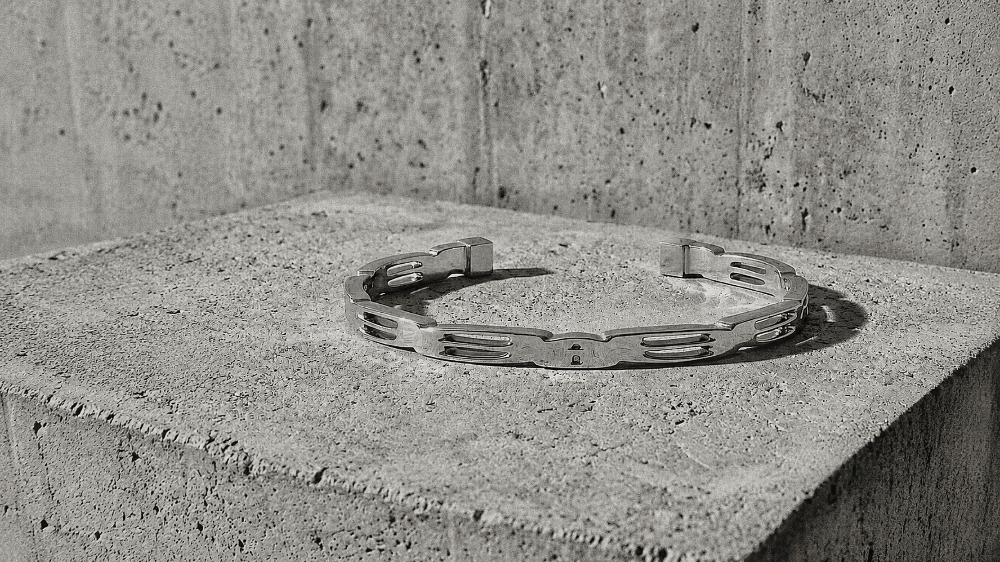
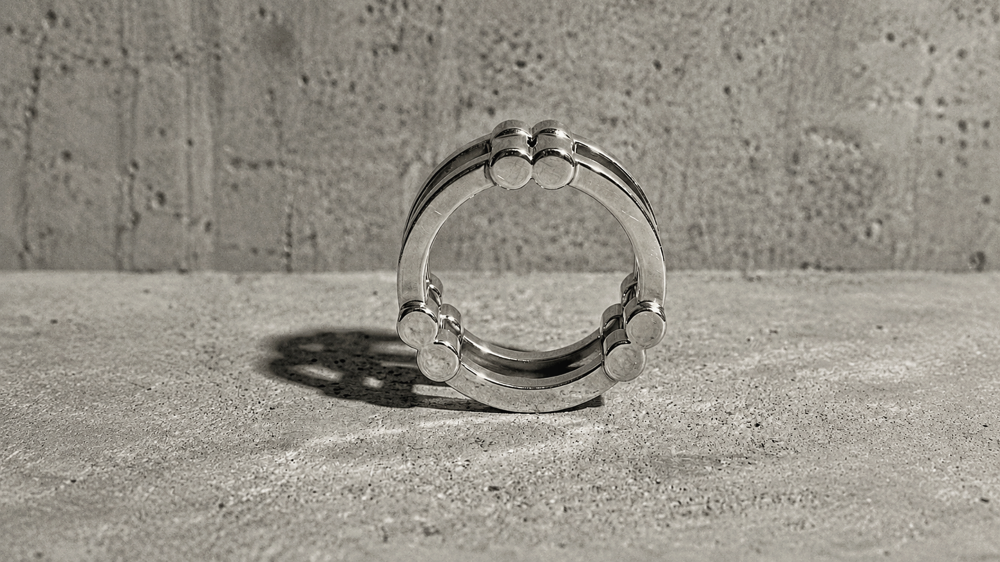
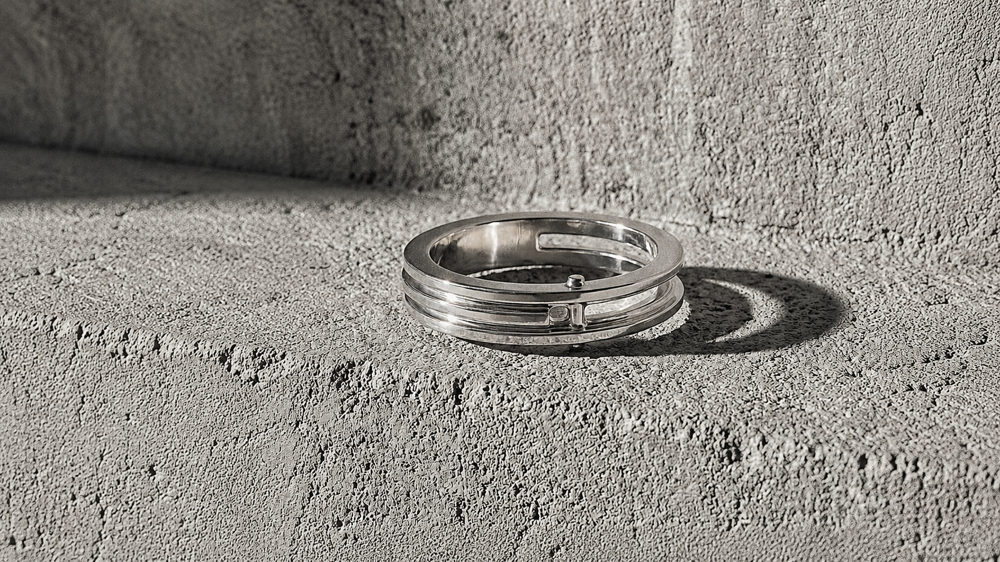
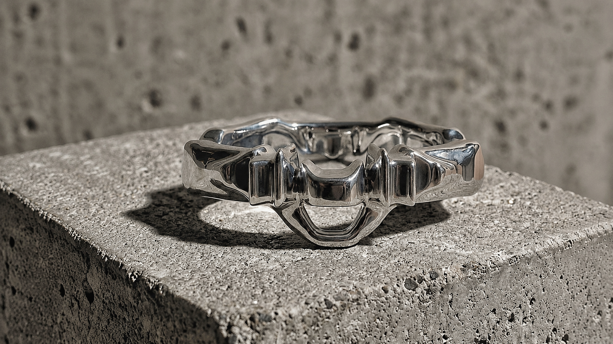

Singular Works preserves the completed collections that defined the evolution of A GROSS DOMESTIC PRODUCT. Each body of work records a distinct structural investigation and remains accessible as part of the studio's editorial archive.
The collections presented here are preserved as complete bodies of research. They are no longer active product lines, but documentary records of the evolution of the practice. Each marks a specific investigation into geometry, material, repetition and the body.
Growth became structure.

Cyprus examined branching geometries and the gradual accumulation of form. Rather than reproducing botanical motifs, the collection translated principles of organic growth into polished silver structures whose complexity emerged through repetition and controlled proliferation.
Connection became architecture.

Link investigated continuity, articulation and structural dependence. Every element acquired meaning through its relationship with another, transforming the traditional link into an architectural language.
Intersection became form.

Junction focused on convergence, compression and structural negotiation. The collection replaced continuity with concentrated nodes where multiple trajectories met, producing objects defined by tension rather than symmetry.
Difference became system.

(A) Symmetry explored controlled variation as a formal methodology. Every object belonged to a common family while preserving its own internal identity, documenting the studio's sustained investigation into difference and repetition.
Singular Works preserves the completed collections that shaped the language of A GROSS DOMESTIC PRODUCT. They remain accessible as archival investigations, documenting the evolution of the practice while standing apart from the studio's current work developed through Atelier.